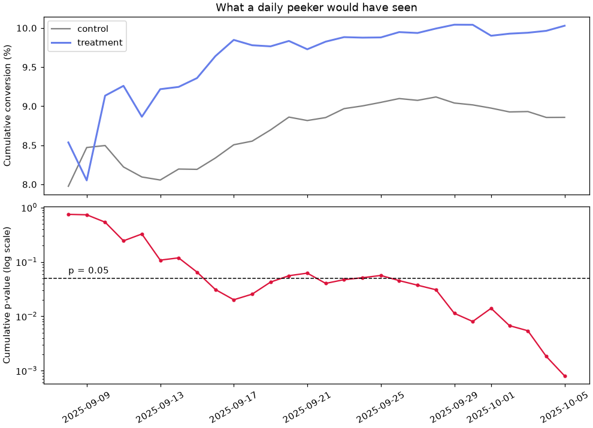
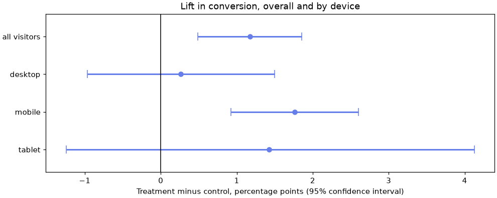

🧪 Lesson 4.6: A/B Testing
Take one real experiment, Pinecrest's new checkout page, from the plan written before launch to the memo that says "ship it", and learn where honest experiments go wrong along the way.
🎯 Learning Objectives
By the end of this lesson, you will be able to:
- Write an experiment plan that names the metric, the unit, the sample size and the decision rule before any data are collected
- Calculate the sample size for a conversion test with statsmodels power functions
- Check that randomization worked, then run a two-proportion test and report the difference with its confidence interval
- Explain why peeking inflates false alarms and why segment results are exploratory
- Use a guardrail metric and practical significance to turn a result into a written recommendation
In This Lesson
🎲 Why Run an Experiment?
In the last lesson you found that rainy days have fewer store visitors, and you had to work hard to argue that rain itself was responsible, because rain also comes with seasons. That is the permanent weakness of observational data: the groups you compare differ in more ways than the one you care about.
An A/B test removes that weakness by design. Pinecrest's web team built a new checkout page. Instead of launching it and comparing this month with last month (different weather, different promotions, different shoppers), they showed the old page to half of the visitors and the new page to the other half, at the same time, and let a coin flip decide who saw which.
💡 Mental Model: The Coin Does the Controlling
Imagine sorting a crowd into two rooms by flipping a coin for each person. Tall people, impatient people, people on phones, people who were going to buy anyway: every kind ends up split about evenly between the rooms, including kinds you never thought to measure. The rooms are alike in everything except what you do to them next. So if the rooms behave differently afterward, either the treatment did it or chance did, and Lesson 4.5 taught you how to judge chance.
Randomization is why experiments can support the word "caused". It does not make the statistics optional. Most of what goes wrong in A/B testing goes wrong around the test: too few visitors, a broken split, stopping at a lucky moment, or slicing the data until something looks exciting. This lesson walks through the whole experiment in the order a careful team would work, with every number computed from data/ab_test.csv.
📋 Design Before Data
Every choice you make after seeing results is a chance to fool yourself. So the choices are made first and written down. A plan needs six things.
| Decision | Question it answers | For the checkout test |
|---|---|---|
| Unit | What gets randomized and counted? | A visitor who reaches the checkout page. One visitor, one variant, one row. |
| Primary metric | What single number decides the test? | Conversion: the share of those visitors who complete an order. |
| Guardrail metric | What must not get worse? | Order value. More orders that are each much smaller would not be a win. |
| Hypotheses | What does the test compare? | H0: the two pages convert equally. H1: they differ (two-sided), α = 0.05. |
| Sample size and duration | When is the test over? | Calculated in the next section, then fixed. |
| Decision rule | What result leads to what action? | Ship if conversion is significantly higher and the guardrail holds. |
Two of these deserve a comment. The unit matters because tests assume independent observations. If one person could appear five times, or could see both pages, the counts would overstate how much evidence you have. And the test is two-sided even though everyone hopes the new page is better, because a new page can also be worse, and you would need to know.
✅ A Plan Is a Gift to Your Future Self
Writing the plan takes ten minutes. It is what lets you say, when the results arrive, "this was the question, this was the rule, here is the answer" instead of searching for a story. If your first plans feel clumsy, that is normal. They get sharper with each experiment.
🔢 How Many Visitors?
You saw in Lesson 4.5 that a test with too little data usually misses a real effect. For an experiment, the sample size is calculated before launch from four ingredients:
- the baseline rate: Pinecrest's current checkout page converts about 8.9% of visitors;
- the minimum detectable effect: the smallest improvement you want a good chance of catching. The design team expects the new page to reach about 10.0%;
- α, the false-alarm rate you accept: 0.05;
- power, the chance of detecting the effect if it is real: 0.80 by convention.
statsmodels turns the two rates into an effect size called Cohen's h (the counterpart, for proportions, of the Cohen's d you used for means) and then solves for the number of visitors.
import numpy as np
import pandas as pd
import matplotlib.pyplot as plt
from scipy import stats
from statsmodels.stats.power import NormalIndPower
from statsmodels.stats.proportion import (proportion_effectsize, proportions_ztest,
confint_proportions_2indep)
baseline, target = 0.089, 0.100
h = proportion_effectsize(target, baseline)
n_per_arm = NormalIndPower().solve_power(effect_size=h, alpha=0.05, power=0.80, ratio=1.0)
print(f"Cohen's h = {h:.4f}")
print(f"Visitors needed per arm: {n_per_arm:,.0f}")
print(f"Both arms together: {2 * n_per_arm:,.0f}")Output
Cohen's h = 0.0376
Visitors needed per arm: 11,092
Both arms together: 22,185About 11,100 visitors in each group ("arm"), 22,200 in total, to have an 80% chance of detecting a move from 8.9% to 10.0%. That may be more than you expected. Conversion is a yes-or-no outcome, each visitor carries little information, and a difference of one percentage point is small next to that noise.
The checkout page gets about 1,000 visitors a day. How long would tests for different target rates take?
for goal in [0.094, 0.100, 0.109, 0.119]:
n = NormalIndPower().solve_power(effect_size=proportion_effectsize(goal, baseline),
alpha=0.05, power=0.80)
print(f"detect {baseline:.1%} -> {goal:>5.1%} (+{(goal - baseline) * 100:.1f} points): "
f"{n:>7,.0f} per arm, about {2 * n / 1000:>4.0f} days")Output
detect 8.9% -> 9.4% (+0.5 points): 52,187 per arm, about 104 days
detect 8.9% -> 10.0% (+1.1 points): 11,092 per arm, about 22 days
detect 8.9% -> 10.9% (+2.0 points): 3,492 per arm, about 7 days
detect 8.9% -> 11.9% (+3.0 points): 1,617 per arm, about 3 daysDetecting half a point would take three and a half months; detecting three points takes three days. This trade-off shapes every experiment plan. Pinecrest's product team said that anything under half a point would not be worth the cost of maintaining a new page, but a test that could detect half a point reliably is too long to run. So the plan aims at the lift the designers expect, 1.1 points, and accepts that a smaller true effect might be missed.
That needs a little over 22 days. The team rounds up to 28, four complete weeks, for a reason that has nothing to do with power: shopping behavior differs by day of the week, and a test that covers three Saturdays and four Mondays would be lopsided.
planned = NormalIndPower().power(effect_size=h, nobs1=14_000, alpha=0.05, ratio=1.0)
print(f"Power with 14,000 per arm (28 days): {planned:.2f}")Output
Power with 14,000 per arm (28 days): 0.88📝 The Plan, as Written Before Launch
Test: new checkout page vs current page, visitors split 50/50 at random. Primary metric: conversion per visitor. Guardrail: order value and revenue per visitor. Size: 28 days, about 14,000 visitors per arm, 88% power to detect 8.9% to 10.0% at α = 0.05, two-sided. Analysis: one two-proportion test, run once, after day 28. Decision: ship if conversion is significantly higher and revenue per visitor is not lower. Segment results are exploratory.
🔍 Did the Randomization Work?
The test ran from September 8 to October 5, 2025. Before looking at a single conversion, check that the experiment itself is sound. A bug in the assignment code is far more common than people expect, and it can manufacture a "result".
ab = pd.read_csv("data/ab_test.csv", parse_dates=["date"])
print(ab.head(4).to_string(index=False))
print()
print("Rows:", len(ab), " unique visitors:", ab["visitor_id"].nunique())
print("Dates:", ab["date"].min().date(), "to", ab["date"].max().date(), f"({ab['date'].nunique()} days)")
print(ab["variant"].value_counts().to_string())Output
visitor_id date variant device returning converted order_value
V024143 2025-09-08 control desktop False 0 NaN
V012790 2025-09-08 control desktop False 0 NaN
V004888 2025-09-08 control desktop True 0 NaN
V004086 2025-09-08 treatment mobile False 0 NaN
Rows: 28000 unique visitors: 28000
Dates: 2025-09-08 to 2025-10-05 (28 days)
variant
treatment 14079
control 1392128,000 rows, 28,000 different visitors, 28 days: the unit is what the plan said. order_value is missing for visitors who did not order, which is expected.
Check 1: Is the Split Really 50/50?
The arms are not exactly equal: 14,079 against 13,921. A fair coin rarely lands exactly half and half, so the question is the familiar one: is this imbalance more than chance would produce? A large imbalance is called a sample ratio mismatch, and it means visitors are going missing from one arm (a crash, a redirect, a filter), which breaks the comparison. stats.binomtest tests a count against an expected proportion.
n_treat = int((ab["variant"] == "treatment").sum())
srm = stats.binomtest(n_treat, n=len(ab), p=0.5)
print(f"Treatment share: {n_treat / len(ab):.2%}")
print(f"p-value against a 50/50 split: {srm.pvalue:.3f}")Output
Treatment share: 50.28%
p-value against a 50/50 split: 0.348A split of 50.28% is entirely ordinary for a fair coin (p = 0.35). This is one of the rare places where you hope for a large p-value.
Check 2: Are the Arms Alike?
Randomization should give both arms the same mix of visitors. Compare the characteristics that were fixed before the visitor saw a page: device and whether they had visited before.
for col in ["device", "returning"]:
mix = pd.crosstab(ab["variant"], ab[col], normalize="index").round(3)
p_mix = stats.chi2_contingency(pd.crosstab(ab["variant"], ab[col])).pvalue
print(mix.to_string())
print(f"chi-square p = {p_mix:.2f}\n")Output
device desktop mobile tablet
variant
control 0.376 0.551 0.073
treatment 0.379 0.554 0.067
chi-square p = 0.11
returning False True
variant
control 0.652 0.348
treatment 0.646 0.354
chi-square p = 0.27Both arms are about 55% mobile and 35% returning visitors, and neither chi-square test finds a difference beyond chance. The experiment is healthy, so its results can be read.
⚠️ If a Check Fails, Stop
A failed ratio or balance check is not something to "adjust for". It says the experiment did not run the way the plan describes, so nothing downstream can be trusted. Find the bug, fix it, and run the test again. It is disappointing and it is the job.
🎯 The Primary Result
Now the planned analysis, run once. Start with the counts.
summary = ab.groupby("variant")["converted"].agg(conversions="sum", visitors="count", rate="mean")
print(summary.round(4))
c_c, n_c = summary.loc["control", ["conversions", "visitors"]]
c_t, n_t = summary.loc["treatment", ["conversions", "visitors"]]
rate_c, rate_t = c_c / n_c, c_t / n_t
print(f"\nDifference: {(rate_t - rate_c) * 100:+.2f} percentage points")
print(f"Relative lift: {rate_t / rate_c - 1:+.1%}")Output
conversions visitors rate
variant
control 1233 13921 0.0886
treatment 1412 14079 0.1003
Difference: +1.17 percentage points
Relative lift: +13.2%💡 Points and Percent Are Different Things
Conversion rose from 8.86% to 10.03%. That is 1.17 percentage points (the absolute difference) and 13.2% (the relative lift: 1.17 is 13.2% of 8.86). Both are correct, and they sound very different. Always say which one you mean. "Conversion improved 13%" will be heard by some readers as "from 9% to 22%".
The test for comparing two proportions is the two-proportion z-test. It follows the pattern you know: take the difference, divide by its standard error, and ask how far from zero that is. Here it is by hand, so there is no mystery in it, and then from statsmodels.
def p_two_prop(c1, n1, c2, n2):
"""Two-sided p-value for the difference between two proportions (pooled z-test)."""
pooled = (c1 + c2) / (n1 + n2) # the rate if H0 is true
se = np.sqrt(pooled * (1 - pooled) * (1 / n1 + 1 / n2))
z = (c1 / n1 - c2 / n2) / se
return 2 * stats.norm.sf(np.abs(z))
z, p = proportions_ztest([c_t, c_c], [n_t, n_c])
print(f"By hand: p = {p_two_prop(c_t, n_t, c_c, n_c):.4f}")
print(f"statsmodels: z = {z:.2f}, p = {p:.4f}")Output
By hand: p = 0.0008
statsmodels: z = 3.35, p = 0.0008If the two pages converted equally, a gap this large would turn up in fewer than 1 experiment in 1,000. That is well under the α of 0.05 set in the plan, so the null hypothesis is rejected. As always, the p-value needs company.
low, high = confint_proportions_2indep(c_t, n_t, c_c, n_c, compare="diff")
r_low, r_high = confint_proportions_2indep(c_t, n_t, c_c, n_c, compare="ratio")
print(f"95% CI for the difference: {low * 100:+.2f} to {high * 100:+.2f} percentage points")
print(f"95% CI for the relative lift: {r_low - 1:+.1%} to {r_high - 1:+.1%}")
print(f"Cohen's h: {proportion_effectsize(rate_t, rate_c):.3f}")Output
95% CI for the difference: +0.49 to +1.86 percentage points
95% CI for the relative lift: +5.3% to +21.8%
Cohen's h: 0.040The interval says the new page adds somewhere between about half a point and 1.9 points of conversion, with 1.17 the best single estimate. Cohen's h of 0.04 is tiny on the usual scale, which is typical of conversion experiments: small shifts in a rate, applied to every visitor, every day.
You have met this test before in another form. On a two-by-two table, the chi-square test from Lesson 4.5 (without the small continuity correction that SciPy applies to two-by-two tables by default; correction=False turns it off) is mathematically the same test.
chi = stats.chi2_contingency(pd.crosstab(ab["variant"], ab["converted"]), correction=False)
print(f"chi-square = {chi.statistic:.2f} (z squared = {z ** 2:.2f}), p = {chi.pvalue:.4f}")Output
chi-square = 11.24 (z squared = 11.24), p = 0.0008You will reuse this comparison several times, so wrap it in a function that returns everything worth reporting.
def compare_rates(df):
"""Treatment vs control conversion for the rows in df."""
s = df.groupby("variant")["converted"].agg(["sum", "count"])
c_c, n_c = s.loc["control"]
c_t, n_t = s.loc["treatment"]
r_c, r_t = c_c / n_c, c_t / n_t
ci = confint_proportions_2indep(c_t, n_t, c_c, n_c, compare="diff")
return {"visitors": int(n_c + n_t), "control": r_c, "treatment": r_t,
"diff": r_t - r_c, "ci_low": ci[0], "ci_high": ci[1],
"se": np.sqrt(r_c * (1 - r_c) / n_c + r_t * (1 - r_t) / n_t),
"p": proportions_ztest([c_t, c_c], [n_t, n_c])[1]}
overall = compare_rates(ab)
print({k: (v if k == "visitors" else round(float(v), 4)) for k, v in overall.items()})Output
{'visitors': 28000, 'control': 0.0886, 'treatment': 0.1003, 'diff': 0.0117, 'ci_low': 0.0049, 'ci_high': 0.0186, 'se': 0.0035, 'p': 0.0008}⚖️ Statistical vs Practical Significance
"Significant" settles one question: the difference is unlikely to be chance. Whether the difference is worth acting on is a separate question, and the plan already contains the yardstick: the product team said a lift under half a point would not justify the new page.
worthwhile = 0.005 # half a percentage point, from the plan
print(f"Estimate: {overall['diff'] * 100:+.2f} points")
print(f"95% CI: {overall['ci_low'] * 100:+.2f} to {overall['ci_high'] * 100:+.2f} points")
print(f"Smallest worthwhile lift: {worthwhile * 100:+.2f} points")
print("Whole interval above zero:", overall["ci_low"] > 0)
print("Whole interval above the worthwhile lift:", overall["ci_low"] > worthwhile)Output
Estimate: +1.17 points
95% CI: +0.49 to +1.86 points
Smallest worthwhile lift: +0.50 points
Whole interval above zero: True
Whole interval above the worthwhile lift: FalseThis is the honest picture. The data rule out "no effect". The best estimate, 1.17 points, is more than double the worthwhile threshold. And the lower end of the interval, 0.49, sits right at the threshold, so the data cannot quite rule out a lift that is only just worth having. A confidence interval laid next to a business threshold gives four possible readings:
| The interval is... | Reading |
|---|---|
| entirely above the threshold | Significant and clearly worthwhile |
| above zero, straddling the threshold | A real effect, probably worthwhile, size still uncertain (this test) |
| above zero, entirely below the threshold | Real and too small to matter: statistically but not practically significant |
| straddling zero | Not detected. If the interval is wide, the test was simply too small to say |
👀 The Peeking Problem
The plan said to analyze once, after day 28. In practice someone opens the dashboard every Monday. Here is what they would have seen: the same test, computed on the data available at the end of each week.
ab["week"] = (ab["date"] - ab["date"].min()).dt.days // 7 + 1
for wk in [1, 2, 3, 4]:
r = compare_rates(ab[ab["week"] <= wk])
print(f"after week {wk}: {r['visitors']:>6,} visitors control {r['control']:.2%} "
f"treatment {r['treatment']:.2%} p = {r['p']:.4f}")Output
after week 1: 7,018 visitors control 8.20% treatment 9.25% p = 0.1188
after week 2: 14,083 visitors control 8.82% treatment 9.73% p = 0.0622
after week 3: 21,043 visitors control 9.12% treatment 9.99% p = 0.0308
after week 4: 28,000 visitors control 8.86% treatment 10.03% p = 0.0008After week 1 the verdict would have been "no significant difference", and an impatient team might have abandoned a page that works. After week 3 it crossed 0.05. Day by day, the picture is even less steady.
days = sorted(ab["date"].unique())
running = pd.DataFrame([compare_rates(ab[ab["date"] <= d]) for d in days], index=days)
fig, (ax1, ax2) = plt.subplots(2, 1, figsize=(9, 6.5), sharex=True, layout="constrained")
ax1.plot(running.index, running["control"] * 100, color="gray", label="control")
ax1.plot(running.index, running["treatment"] * 100, color="#667eea", linewidth=2, label="treatment")
ax1.set_ylabel("Cumulative conversion (%)")
ax1.set_title("What a daily peeker would have seen")
ax1.legend()
ax2.plot(running.index, running["p"], color="crimson", marker="o", markersize=3)
ax2.axhline(0.05, color="black", linestyle="--", linewidth=1)
ax2.text(running.index[0], 0.056, "p = 0.05", va="bottom")
ax2.set_yscale("log")
ax2.set_ylabel("Cumulative p-value (log scale)")
ax2.tick_params(axis="x", rotation=30)
plt.show()
crossings = (running["p"] < 0.05).astype(int).diff().abs().sum()
print(f"First day with p below 0.05: day {(running['p'] < 0.05).argmax() + 1}")
print(f"Times the p-value crossed the 0.05 line: {crossings:.0f}")Output
First day with p below 0.05: day 9
Times the p-value crossed the 0.05 line: 5
The p-value first dipped under 0.05 on day 9, popped back above it, dipped again, and popped back again. A team that stops "as soon as it is significant" is stopping at a lucky moment by construction. In this test the effect happens to be real, so they would have reached the right conclusion with a third of the data. The trouble is what the same habit does when there is no effect.
Simulating a Peeker
Simulate 5,000 experiments in which both arms convert at exactly 8.9%, so every "significant" result is a false alarm. Each experiment has four weekly looks, with 3,500 visitors per arm per week.
rng = np.random.default_rng(42)
sims, per_week = 5_000, 3_500
a = rng.binomial(per_week, 0.089, size=(sims, 4)).cumsum(axis=1) # cumulative conversions, arm A
b = rng.binomial(per_week, 0.089, size=(sims, 4)).cumsum(axis=1) # arm B: the same true rate
n_seen = per_week * np.arange(1, 5) # visitors per arm at each look
p_looks = p_two_prop(a, n_seen, b, n_seen) # shape (5000, 4)
print(f"False alarms, one look at the end: {(p_looks[:, -1] < 0.05).mean():.1%}")
print(f"False alarms, stop at any of 4 looks: {(p_looks < 0.05).any(axis=1).mean():.1%}")
print(f"Same 4 looks with a 0.0125 threshold: {(p_looks < 0.0125).any(axis=1).mean():.1%}")Output
False alarms, one look at the end: 4.4%
False alarms, stop at any of 4 looks: 12.2%
Same 4 looks with a 0.0125 threshold: 3.5%One planned look keeps the false-alarm rate near the promised 5%. Four looks with permission to stop at the first significant one push it to about 12%, and the exercises show that daily looks push it past 25%. Peeking is the multiple-comparisons problem from Lesson 4.5 in disguise: each look is another ticket in the lottery.
💡 What to Do Instead
Simplest: fix the sample size, look at the primary metric once, at the end. Watching the dashboard for bugs and broken tracking is fine; making the ship decision from it is not. If you must be able to stop early: pay for the extra looks with a stricter threshold. Dividing α by the number of looks (0.0125 for four) is the blunt version, and it kept false alarms under 5% above. Purpose-built methods called group sequential designs do the same job more efficiently, and they are also decided in the plan, before launch. This test's final p-value of 0.0008 clears even the strict threshold.
📱 Segments: Handle with Care
The overall result is in. The natural next question is "did it work for everyone?" Break the test down by device, using the function from earlier, and correct the three p-values with Holm's method.
from statsmodels.stats.multitest import multipletests
by_device = pd.DataFrame({dev: compare_rates(g) for dev, g in ab.groupby("device")}).T
by_device["p_holm"] = multipletests(by_device["p"], method="holm")[1]
show = by_device[["visitors", "control", "treatment", "diff", "ci_low", "ci_high"]].copy()
show[show.columns[1:]] = (show[show.columns[1:]] * 100).round(2)
show["visitors"] = show["visitors"].astype(int)
show["p"] = by_device["p"].map("{:.5f}".format)
show["p_holm"] = by_device["p_holm"].map("{:.5f}".format)
print(show.to_string())Output
visitors control treatment diff ci_low ci_high p p_holm
desktop 10575 11.73 12.00 0.27 -0.97 1.50 0.67236 0.67236
mobile 15462 6.82 8.58 1.76 0.92 2.60 0.00004 0.00012
tablet 1963 9.40 10.83 1.43 -1.24 4.13 0.29476 0.58952rows = pd.concat([pd.DataFrame({"all visitors": overall}).T, by_device.drop(columns="p_holm")])
rows = rows.iloc[::-1] # so "all visitors" is drawn at the top
fig, ax = plt.subplots(figsize=(9, 3.6), layout="constrained")
ax.errorbar(rows["diff"] * 100, rows.index,
xerr=[(rows["diff"] - rows["ci_low"]) * 100, (rows["ci_high"] - rows["diff"]) * 100],
fmt="o", color="#667eea", ecolor="#667eea", elinewidth=2, capsize=5)
ax.axvline(0, color="black", linewidth=1)
ax.set_xlabel("Treatment minus control, percentage points (95% confidence interval)")
ax.set_title("Lift in conversion, overall and by device")
ax.margins(y=0.2)
plt.show()
The chart is ax.errorbar from Lesson 3.1 turned sideways: xerr draws horizontal bars, and passing two lists gives the distance to the left and to the right of each point separately.
On phones, conversion went from 6.82% to 8.58%, a lift of 1.76 points. On desktop, the two pages are almost indistinguishable: 11.73% and 12.00%. The table and the chart invite a confident headline: "The new page works on mobile and does nothing on desktop." Slow down. Three things stand between this table and that sentence.
- Nobody planned this comparison. Device is one of several ways to slice the visitors (new or returning, weekday or weekend, week 1 or week 4). Slice enough ways and some slice will look special. The Holm correction covers the three device tests, not the slicing you might have done instead.
- "Not significant on desktop" is not "no effect on desktop". Desktop's interval runs from about −1.0 to +1.5 points. A lift as large as the overall 1.17 is still inside it. Tablet, with under 2,000 visitors, can say almost nothing.
- The claim is about a difference between segments, and that needs its own test. "Significant here, not significant there" is not evidence that here and there differ. Test the difference between the two lifts directly.
mob, desk = by_device.loc["mobile"], by_device.loc["desktop"]
gap = mob["diff"] - desk["diff"]
gap_se = np.sqrt(mob["se"] ** 2 + desk["se"] ** 2)
z_gap = gap / gap_se
p_gap = 2 * stats.norm.sf(abs(z_gap))
print(f"Mobile lift {mob['diff'] * 100:.2f} points, desktop lift {desk['diff'] * 100:.2f} points")
print(f"Difference between the lifts: {gap * 100:.2f} points (standard error {gap_se * 100:.2f})")
print(f"z = {z_gap:.2f}, p = {p_gap:.3f}")Output
Mobile lift 1.76 points, desktop lift 0.27 points
Difference between the lifts: 1.49 points (standard error 0.76)
z = 1.96, p = 0.049The mobile lift is about 1.5 points larger than the desktop lift, with p = 0.049: right on the line, from a comparison chosen after seeing the data. That is a lead, not a finding. The honest summary has two parts with different levels of confidence:
✅ How to Say It
Confirmed (planned, primary): the new page raises conversion overall. Exploratory (unplanned): the gain appears concentrated on mobile, with little visible change on desktop; this is suggestive and should be confirmed by a follow-up test before anyone builds a mobile-only strategy on it. Writing "exploratory" is not weakness. It tells the reader exactly how much weight the sentence can bear.
🛡️ The Guardrail Metric
A checkout page could raise conversion in a way that hurts the business: say, by making a cheaper shipping option so prominent that orders shrink. The plan named order value as the guardrail. Compare it between arms for the visitors who ordered, with the Welch test from Lesson 4.5.
buyers = ab.dropna(subset=["order_value"])
ov_c = buyers.loc[buyers["variant"] == "control", "order_value"]
ov_t = buyers.loc[buyers["variant"] == "treatment", "order_value"]
res_ov = stats.ttest_ind(ov_t, ov_c, equal_var=False)
ci_ov = res_ov.confidence_interval()
print(buyers.groupby("variant")["order_value"].agg(["count", "mean", "median"]).round(2))
print(f"\nDifference in mean order value: {ov_t.mean() - ov_c.mean():+.2f} dollars")
print(f"95% CI {ci_ov.low:+.2f} to {ci_ov.high:+.2f}, Welch p = {res_ov.pvalue:.2f}")Output
count mean median
variant
control 1233 89.18 76.84
treatment 1412 89.11 75.76
Difference in mean order value: -0.07 dollars
95% CI -4.02 to +3.87, Welch p = 0.97The average order is $89 in both arms, 7 cents apart. With a guardrail, the confidence interval is the important part: it says the new page changes the mean order by somewhere between −$4 and +$4. That is a positive statement that any harm is small, which is more than "p was not significant" could tell you.
⚠️ Buyers Are Not a Randomized Group
The coin flip made the two arms of visitors comparable. It did not make the two groups of buyers comparable, because the page itself influences who becomes a buyer. If the new page wins over hesitant shoppers who buy one small item, average order value among buyers would fall even though nobody is spending less. The comparison that keeps the protection of randomization uses every visitor: revenue per visitor, counting a non-buyer as $0.
ab["revenue"] = ab["order_value"].fillna(0)
rev_c = ab.loc[ab["variant"] == "control", "revenue"]
rev_t = ab.loc[ab["variant"] == "treatment", "revenue"]
res_rev = stats.ttest_ind(rev_t, rev_c, equal_var=False)
ci_rev = res_rev.confidence_interval()
print(f"Revenue per visitor: control ${rev_c.mean():.2f}, treatment ${rev_t.mean():.2f}")
print(f"Difference ${rev_t.mean() - rev_c.mean():.2f}, 95% CI ${ci_rev.low:.2f} to ${ci_rev.high:.2f}, "
f"Welch p = {res_rev.pvalue:.4f}")
yearly_visitors = len(ab) / 28 * 365
print(f"\nAt {yearly_visitors:,.0f} checkout visitors a year, that is about "
f"${(rev_t.mean() - rev_c.mean()) * yearly_visitors:,.0f} a year")
print(f"(from ${ci_rev.low * yearly_visitors:,.0f} to ${ci_rev.high * yearly_visitors:,.0f})")Output
Revenue per visitor: control $7.90, treatment $8.94
Difference $1.04, 95% CI $0.32 to $1.75, Welch p = 0.0045
At 365,000 checkout visitors a year, that is about $378,793 a year
(from $117,633 to $639,953)Revenue per visitor rises from $7.90 to $8.94. Most visitors contribute $0, so this variable is extremely skewed, and the t-test is still reasonable because each mean is an average over 14,000 visitors (Exercise 5 checks it with a permutation test). Scaled to a year of traffic, the estimate is roughly $380,000, with an interval from about $120,000 to $640,000. Treat the yearly figure as an order of magnitude: it assumes that four weeks in early autumn represent the whole year, which the experiment cannot tell you.
⚠️ Common Mistakes
Experiments fail quietly. Most of the mistakes below produce a clean-looking number and no error. Learning to distrust a result that arrived too easily is part of the craft.
1. Passing the Raw Difference as the Effect Size
wrong_n = NormalIndPower().solve_power(effect_size=0.011, alpha=0.05, power=0.80)
print(f"{wrong_n:,.0f} per arm")Output (wrong, and silent)
129,733 per armWhat happened: effect_size expects Cohen's h, not the difference in rates. Typing 0.011 (the 1.1-point lift) asks for a far smaller effect than you meant, and the answer is twelve times too large. Fix: always convert with proportion_effectsize(target, baseline), which gave 11,092.
2. Leaving solve_power Nothing to Solve
NormalIndPower().solve_power(effect_size=h, nobs1=14_000, alpha=0.05, power=0.80)Error
ValueError: need exactly one keyword that is NoneWhat it means: solve_power finds whichever one of effect size, sample size, α and power you leave out. Here all four were given. Fix: omit the one you want: leave out nobs1 to get a sample size, or leave out power (or call .power(...)) to get the power of a given design.
3. Giving the z-Test Rates Instead of Counts
z_bad, p_bad = proportions_ztest([0.1003, 0.0886], [14079, 13921])
print(f"z = {z_bad:.3f}, p = {p_bad:.2f}")Output (wrong, and silent)
z = 0.024, p = 0.98What happened: the first argument is the number of conversions in each arm. Given 0.1003, the function tested "a tenth of one conversion out of 14,079". Fix: pass counts, [1412, 1233], and check that your result reproduces the rates you printed.
4. Stopping the Moment p Drops Below 0.05
No error and no warning: only a false-alarm rate of 12% with weekly looks, or more than 25% with daily looks, as the simulation showed. Fix: set the sample size in advance and decide once, or plan a sequential design with stricter thresholds.
5. Declaring a Segment Winner from Two p-Values
"Significant on mobile, not on desktop" does not show that the devices differ. Fix: test the difference between the lifts, as in Segments, correct for the number of slices, and label unplanned findings exploratory.
6. Judging the Experiment on Buyers Only
Any metric computed only on visitors who converted compares two groups that the treatment helped to choose. Fix: make per-visitor metrics (conversion, revenue per visitor) the basis of the decision, and treat buyer-only metrics as supporting detail.
🛠️ Project: The Decision Memo
An analysis is finished when someone can act on it. In this project you rebuild the checkout analysis as one clean notebook, add a segment question the lesson did not cover, and write the one-page memo that goes to the head of e-commerce. Work in a new notebook called lesson_4_6_project. Allow about 40 minutes.
🛠️ Step 1: Set up and run the health checks (5 min)
Load the data and confirm the unit, the split and the balance in one cell. Each check prints one line you can quote.
import numpy as np
import pandas as pd
from scipy import stats
from statsmodels.stats.proportion import proportions_ztest, confint_proportions_2indep
ab = pd.read_csv("data/ab_test.csv", parse_dates=["date"])
n_treat = int((ab["variant"] == "treatment").sum())
print("One row per visitor:", ab["visitor_id"].is_unique)
print(f"Split: {n_treat:,} treatment / {len(ab) - n_treat:,} control, "
f"p vs 50/50 = {stats.binomtest(n_treat, len(ab), 0.5).pvalue:.2f}")
for col in ["device", "returning"]:
p_bal = stats.chi2_contingency(pd.crosstab(ab["variant"], ab[col])).pvalue
print(f"Balance on {col}: p = {p_bal:.2f}")Output
One row per visitor: True
Split: 14,079 treatment / 13,921 control, p vs 50/50 = 0.35
Balance on device: p = 0.11
Balance on returning: p = 0.27🛠️ Step 2: The primary result (5 min)
Paste in compare_rates from the lesson and print the headline numbers in the form you will quote them.
def compare_rates(df):
"""Treatment vs control conversion for the rows in df."""
s = df.groupby("variant")["converted"].agg(["sum", "count"])
c_c, n_c = s.loc["control"]
c_t, n_t = s.loc["treatment"]
r_c, r_t = c_c / n_c, c_t / n_t
ci = confint_proportions_2indep(c_t, n_t, c_c, n_c, compare="diff")
return {"visitors": int(n_c + n_t), "control": r_c, "treatment": r_t,
"diff": r_t - r_c, "ci_low": ci[0], "ci_high": ci[1],
"se": np.sqrt(r_c * (1 - r_c) / n_c + r_t * (1 - r_t) / n_t),
"p": proportions_ztest([c_t, c_c], [n_t, n_c])[1]}
def describe(label, r):
print(f"{label:<14} {r['visitors']:>6,} visitors {r['control']:.2%} -> {r['treatment']:.2%} "
f"{r['diff'] * 100:+.2f} pts (95% CI {r['ci_low'] * 100:+.2f} to {r['ci_high'] * 100:+.2f}) "
f"p = {r['p']:.4f}")
overall = compare_rates(ab)
describe("All visitors", overall)Output
All visitors 28,000 visitors 8.86% -> 10.03% +1.17 pts (95% CI +0.49 to +1.86) p = 0.0008🛠️ Step 3: New and returning visitors (10 min)
A colleague looks at the split by returning and says: "It only works for new visitors. For returning visitors it is not significant." Run the two segments, then test the difference between their lifts before you agree.
new = compare_rates(ab[~ab["returning"]])
ret = compare_rates(ab[ab["returning"]])
describe("New", new)
describe("Returning", ret)
gap = new["diff"] - ret["diff"]
gap_se = np.sqrt(new["se"] ** 2 + ret["se"] ** 2)
p_gap = 2 * stats.norm.sf(abs(gap / gap_se))
print(f"\nDifference between the two lifts: {gap * 100:+.2f} points, p = {p_gap:.2f}")Output
New 18,177 visitors 7.70% -> 8.79% +1.09 pts (95% CI +0.29 to +1.89) p = 0.0076
Returning 9,823 visitors 11.04% -> 12.30% +1.26 pts (95% CI -0.01 to +2.53) p = 0.0511
Difference between the two lifts: -0.18 points, p = 0.82Your colleague read two p-values that fall on opposite sides of 0.05 (0.008 and 0.051) and concluded the segments differ. Look at the lifts instead: +1.09 points for new visitors and +1.26 for returning visitors. The returning lift is, if anything, slightly larger. It misses significance only because there are half as many returning visitors, so its interval is wider. The test of the difference (p = 0.82) finds no evidence that the page works differently for the two groups.
🛠️ Step 4: Guardrail and money (5 min)
Compute revenue per visitor for each arm, its difference with a confidence interval, and the yearly range.
ab["revenue"] = ab["order_value"].fillna(0)
rev_c = ab.loc[ab["variant"] == "control", "revenue"]
rev_t = ab.loc[ab["variant"] == "treatment", "revenue"]
res_rev = stats.ttest_ind(rev_t, rev_c, equal_var=False)
ci_rev = res_rev.confidence_interval()
per_year = len(ab) / 28 * 365
print(f"Mean order value: control ${ab.loc[ab['variant'] == 'control', 'order_value'].mean():.2f}, "
f"treatment ${ab.loc[ab['variant'] == 'treatment', 'order_value'].mean():.2f}")
print(f"Revenue per visitor: ${rev_c.mean():.2f} -> ${rev_t.mean():.2f} "
f"(95% CI of the difference ${ci_rev.low:.2f} to ${ci_rev.high:.2f}, p = {res_rev.pvalue:.4f})")
print(f"Per year: about ${(rev_t.mean() - rev_c.mean()) * per_year / 1000:,.0f}k "
f"(${ci_rev.low * per_year / 1000:,.0f}k to ${ci_rev.high * per_year / 1000:,.0f}k)")Output
Mean order value: control $89.18, treatment $89.11
Revenue per visitor: $7.90 -> $8.94 (95% CI of the difference $0.32 to $1.75, p = 0.0045)
Per year: about $379k ($118k to $640k)🛠️ Step 5: Write the memo (15 min)
Write it in a Markdown cell or a text file. The structure below works for almost any experiment: the recommendation first, then the evidence, then what you are less sure of. Every number must come from your notebook. Write your own version before reading this one.
📄 Checkout page test, Sep 8 to Oct 5, 2025
To: Head of E-commerce · From: Analytics
Recommendation. Ship the new checkout page to all visitors.
What we tested. 28,000 checkout visitors were assigned at random, half to the current page and half to the new one, for four full weeks. The plan (metric, sample size, one analysis at the end) was written before launch and followed.
Result.
- Conversion rose from 8.86% to 10.03%: +1.17 percentage points, a 13% relative lift (95% CI +0.49 to +1.86 points; p = 0.0008).
- The guardrail held: average order value is unchanged ($89.18 vs $89.11; the data rule out a change of more than about $4 either way).
- Revenue per visitor rose from $7.90 to $8.94 (95% CI of the gain $0.32 to $1.75). At current traffic that is about $380k a year, plausibly between $120k and $640k.
Is the test trustworthy? The split was 50.3% to 49.7%, consistent with a fair coin, and the two groups had the same mix of devices and of new and returning visitors.
What we are less sure of (exploratory, not planned in advance).
- The gain appears concentrated on mobile (+1.76 points) with little change on desktop (+0.27). The evidence that devices truly differ is borderline (p = 0.049, unplanned). It is worth a follow-up test before acting on it.
- New and returning visitors show similar lifts (+1.09 and +1.26 points).
Caveats.
- The low end of the interval (+0.49 points) is about equal to the half-point lift we said was the minimum worth having.
- Four weeks in early autumn may not represent the holiday season. We suggest keeping 5% of visitors on the old page through December to check that the gain persists.
Notice what the memo does not contain: no z statistics, no jargon, no claim the data cannot support. The reader gets a decision, the size of the prize with its uncertainty, and a clear line between what was confirmed and what was merely noticed.
✅ Project Completion Checklist
- Your notebook confirms one row per visitor, a split consistent with 50/50, and balanced arms
- The primary result reads 8.86% to 10.03%, +1.17 points, 95% CI +0.49 to +1.86, p = 0.0008
- You tested the difference between the new and returning lifts (p = 0.82) instead of comparing their p-values
- Revenue per visitor and its yearly range come from all visitors, not only buyers
- Your memo leads with the recommendation and states absolute and relative lift without mixing them up
- Exploratory findings and caveats are labeled as such
🏋️ Hands-on Exercises
The exercises continue from the lesson's variables and functions (ab, compare_rates, p_two_prop).
🏋️ Exercise 1: Size a Desktop-Only Test
Desktop visitors convert at about 12%. How many visitors per arm would a desktop-only test need to detect a rise to 13% with 80% power at α = 0.05? With 90% power? Desktop gets about 380 checkout visitors a day: how many days is each?
💡 Hint
proportion_effectsize(0.13, 0.12) first, then NormalIndPower().solve_power(...). Days = both arms together divided by daily visitors.
✅ Solution
h_desk = proportion_effectsize(0.13, 0.12)
for pw in [0.80, 0.90]:
n_desk = NormalIndPower().solve_power(effect_size=h_desk, alpha=0.05, power=pw)
print(f"power {pw:.0%}: {n_desk:,.0f} per arm, about {2 * n_desk / 380:.0f} days")Output
power 80%: 17,163 per arm, about 90 days
power 90%: 22,976 per arm, about 121 daysThree months at 80% power and four at 90%. A one-point lift is harder to detect at a 12% baseline than at 8.9% (rates nearer 50% are noisier), and desktop has less traffic. Many good ideas are untestable on a low-traffic segment, and it is better to learn that before launch.
🏋️ Exercise 2: Is This Split Broken?
Another experiment reports 14,400 visitors in treatment and 13,600 in control out of 28,000. "Close enough to half," says the product manager. Test it. Then test a split of 14,150 / 13,850. What would you do in each case?
💡 Hint
stats.binomtest(k, n, p=0.5).pvalue. With tens of thousands of visitors, a fair coin stays remarkably close to 50%.
✅ Solution
for k in [14_400, 14_150]:
print(f"{k:,} of 28,000 ({k / 28_000:.1%}): p = {stats.binomtest(k, 28_000, p=0.5).pvalue:.2g}")Output
14,400 of 28,000 (51.4%): p = 1.8e-06
14,150 of 28,000 (50.5%): p = 0.07451.4% looks harmless and is all but impossible for a fair coin with 28,000 flips (p around 2 in a million). That experiment has a sample ratio mismatch: stop, find out where 800 control visitors went, and do not read its results. The 50.5% split (p = 0.07) is within what chance produces, so it passes, though it is worth a second glance at the logs.
🏋️ Exercise 3: What Can Tablets Tell Us?
For tablet visitors, report the lift with its 95% confidence interval. Then calculate the power this segment had to detect a lift from 9.4% to 10.5% (the group sizes are 1,021 control and 942 treatment). Write one sentence a manager could repeat accurately.
💡 Hint
compare_rates(ab[ab["device"] == "tablet"]) gives the interval. For power, use NormalIndPower().power(effect_size=..., nobs1=1021, ratio=942 / 1021, alpha=0.05).
✅ Solution
tab = compare_rates(ab[ab["device"] == "tablet"])
print(f"Tablet lift {tab['diff'] * 100:+.2f} points, "
f"95% CI {tab['ci_low'] * 100:+.2f} to {tab['ci_high'] * 100:+.2f}, p = {tab['p']:.2f}")
tab_power = NormalIndPower().power(effect_size=proportion_effectsize(0.105, 0.094),
nobs1=1021, ratio=942 / 1021, alpha=0.05)
print(f"Power to detect 9.4% -> 10.5%: {tab_power:.0%}")Output
Tablet lift +1.43 points, 95% CI -1.24 to +4.13, p = 0.29
Power to detect 9.4% -> 10.5%: 13%"On tablets the estimate is a gain of about 1.4 points, but with so few tablet visitors the true effect could be anywhere from a loss of 1.2 points to a gain of 4.1, so this test cannot tell us." With 13% power, a non-significant result was nearly guaranteed whether or not the page works on tablets.
🏋️ Exercise 4: The Daily Peeker
Repeat the peeking simulation with daily looks: 28 looks, 500 visitors per arm per day, both arms converting at 8.9%, 5,000 simulated experiments. What share of these no-effect experiments would a team that stops at the first p < 0.05 declare a winner?
💡 Hint
Copy the simulation and change the shape to (sims, 28), the daily count to 500 and n_seen to 500 * np.arange(1, 29).
✅ Solution
rng = np.random.default_rng(42)
a_d = rng.binomial(500, 0.089, size=(5_000, 28)).cumsum(axis=1)
b_d = rng.binomial(500, 0.089, size=(5_000, 28)).cumsum(axis=1)
n_d = 500 * np.arange(1, 29)
p_daily = p_two_prop(a_d, n_d, b_d, n_d)
print(f"One look on day 28: {(p_daily[:, -1] < 0.05).mean():.1%}")
print(f"Stop at any of 28 looks: {(p_daily < 0.05).any(axis=1).mean():.1%}")Output
One look on day 28: 5.0%
Stop at any of 28 looks: 27.2%More than one in four experiments with no effect at all would be declared a winner. A team working this way ships a steady stream of changes that do nothing and believes each of them was proven.
🏋️ Exercise 5: Check the Revenue Test by Shuffling (Stretch)
Revenue per visitor is mostly zeros with a long right tail, about as far from a bell curve as data get. Check the Welch p-value of 0.0045 with a permutation test, which makes no assumption about shape. It shuffles 28,000 values 9,999 times, so give it a few seconds.
💡 Hint
Use stats.permutation_test((rev_t, rev_c), statistic, n_resamples=9_999, rng=...) with a statistic function that returns the difference in means, as in Lesson 4.5.
✅ Solution
def mean_diff(x, y):
return np.mean(x) - np.mean(y)
perm_rev = stats.permutation_test((rev_t, rev_c), mean_diff, n_resamples=9_999,
rng=np.random.default_rng(42))
print(f"Welch p = {res_rev.pvalue:.4f}, permutation p = {perm_rev.pvalue:.4f}")Output
Welch p = 0.0045, permutation p = 0.0044The two agree to the fourth decimal. With 14,000 visitors per arm, the Central Limit Theorem makes the means behave normally even though the individual values are wildly skewed. Checking a formula against a simulation is how you earn the right to trust it.
🎯 Quick Quiz
🎯 Check Your Understanding
Question 1: Why did Pinecrest show both pages during the same four weeks, assigned at random, instead of comparing September (old page) with October (new page)?
Question 2: The lesson needed 11,092 visitors per arm to detect a rise from 8.9% to 10.0%. Compared with that, what will this print?
q_h = proportion_effectsize(0.139, 0.089)
q_n = NormalIndPower().solve_power(effect_size=q_h, alpha=0.05, power=0.80)
print(round(q_n))Question 3: A team checks its A/B test every morning and stops the first day the p-value is below 0.05. If the change being tested truly has no effect, what happens?
Question 4: In the checkout test, new visitors show a lift of +1.09 points (p = 0.008) and returning visitors +1.26 points (p = 0.051). What is the best reading?
Question 5: In a different test, conversion rises significantly, but average order value among buyers is 6% lower in the treatment arm. What should you look at before deciding?
❓ Common Questions at This Stage
We only care whether the new page is better. Why not a one-sided test?
A one-sided test needs fewer visitors, which is tempting. Its price is that a new page that is worse can never produce a significant result, so harm goes unflagged. Most teams want to know about harm, so two-sided is the sensible default. If you do choose one-sided, choose it in the plan, never after seeing which way the data lean.
The test was not significant. Does that mean the change does nothing?
No. It means the test did not detect an effect. Look at the confidence interval: if it is narrow and centered near zero, any effect is small, and that is useful knowledge. If it is wide, the test was too small to say much. The power calculation you did beforehand tells you which situation to expect.
What is a novelty effect?
Returning visitors sometimes react to anything new, clicking more out of curiosity or less out of confusion, and the reaction fades. A lift that shrinks week after week is a warning sign. It is one reason to run for full weeks instead of a few days, and to keep a small "holdout" group on the old version after launch, as the memo suggests.
Can I test three or four versions at once?
Yes, and the cost is traffic and comparisons. Each arm needs the full sample size, so four arms take twice as long as two, and comparing several variants with control is a multiple-comparisons problem that needs a correction such as Holm. Start with two arms until that feels routine.
I have heard of Bayesian A/B testing. Is what I learned here out of date?
No. The approach in this lesson (fixed sample size, one planned test, an interval) is standard and widely used. Bayesian methods answer a differently phrased question and have their own strengths, and many testing tools offer them. Whatever the method, the hard parts are the ones you practiced: a plan made in advance, a sound randomization, honest handling of peeking and segments, and an effect size judged against what matters.
🌟 Going Further: Bonus Challenge
In the peeking simulation, a threshold of 0.0125 at each of four looks gave a false-alarm rate below 5%, which means it is stricter than necessary. Find, by trial and error with p_looks, the per-look threshold that brings the "any of four looks" false-alarm rate to almost exactly 5%. Then estimate what stopping early costs or saves: simulate experiments with a real effect (8.9% against 10.0%) and compute how often your rule stops at week 1, 2, 3 or 4. You will have rediscovered the idea behind group sequential designs.
📓 Learning Journal
Take five minutes to write in your learning journal (the journal.md file you started in Lesson 0.1, or a paper notebook). Jot down:
- Key concepts you learned today
- Techniques that clicked (and the ones that have not, yet)
- Questions or confusion to come back to
- Ideas to try on your own
- Progress and feelings: how did this lesson go for you?
✍️ This lesson's prompt: Think of a change you would like to test, at work, in a hobby project, or in daily life. Write its six-line plan: unit, primary metric, guardrail, hypotheses, how you would decide the sample size, and the decision rule. Which line was hardest to fill in, and why?
📝 Lesson Summary
🎓 Key Takeaways
- Random assignment makes the arms alike in everything except the treatment, which is what lets an experiment support a causal claim
- Write the plan first: unit, primary metric, guardrail, hypotheses, sample size, decision rule
- Sample size comes before the test, from the baseline, the minimum detectable effect, α and power; small lifts on low rates need many visitors
- Check the experiment before the result: one row per unit, a split consistent with the design, balanced arms
- Report the difference in percentage points with its confidence interval, the relative lift and the p-value, and compare the interval with what is worth having
- Peeking and stopping at the first significant look inflates false alarms from 5% to 12% (weekly) or more than 25% (daily)
- Segment results are exploratory: correct for the slices, test the difference between segments directly, and say "exploratory"
- Judge on per-visitor metrics; buyers are not a randomized group
🏆 What You've Accomplished
- You sized an experiment with statsmodels and saw why it needed four weeks
- You verified a randomization with a sample-ratio test and balance checks
- You ran a two-proportion z-test by hand and with statsmodels, and matched it to chi-square
- You watched a p-value cross 0.05 five times and measured what peeking costs by simulation
- You handled a tempting segment story honestly and caught a second one in the project
- You wrote a decision memo a manager can act on, with the uncertainty left in
🔭 Looking Ahead
In Lesson 4.7: An EDA Workflow you will put the whole of Modules 2 to 4 together into one repeatable routine for a dataset you have not seen before: questions first, then structure, quality, one variable at a time, pairs of variables, segments, and a written list of findings and caveats. The habits from this lesson (plan first, separate confirmed from exploratory, write it down) carry straight over.
📋 Before the Next Lesson
- Save your memo and
compare_rates. The capstone asks for exactly this kind of write-up. - Open
data/survey.csvand write down three questions you would want it to answer, before computing anything. - Reread your Lesson 4.5 notes on multiple comparisons. Exploration is where that problem lives.
🌱 Encouragement for the Journey
You have just done what many teams with expensive testing tools do not: planned before looking, checked the plumbing, refused two attractive stories the data could not support, and told the decision-maker how sure you are. None of that needed advanced mathematics. It needed care, and care is a habit you can keep. The next time someone says "the test won", you will know the five questions to ask.